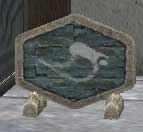

魔法は町の魔法屋が売っています。
「V」キーで地図を表示し、「Magic Shop」というところを目指せばすぐに分かるはずです。なお、町には2人ずつ魔法屋が存在し、それぞれに売っている魔法の種類が違うので注意してください。
購入した魔法は「○○の書」という名前の魔法書として、アイテム欄に追加されますが、実際に使用するためにはこの魔法書を使わなければいけません。ただし、使って取得できるのは必要なクラスを取得しているプレイヤーに限られます。”取得している”と書いたのは、現在取得に必要なクラスを装備していなくても構わないということです。
例)ソーサラーII が使える魔法を取得したい場合
ソーサラーII を装備している・・・覚えられる
ソーサラーII を装備していないが、取得している・・・覚えられる
ソーサラーIII を装備している・・・覚えられる(ちょっと考えれば分かりますよね)
ソーサラーI を装備しているが、ソーサラーII は取得していない・・・覚えられない
ソーサラーII を取得していない・・・覚えられない
 
(左：魔法屋 右：看板)

(取得に必要なクラスは3 の部分を見ること) |
|